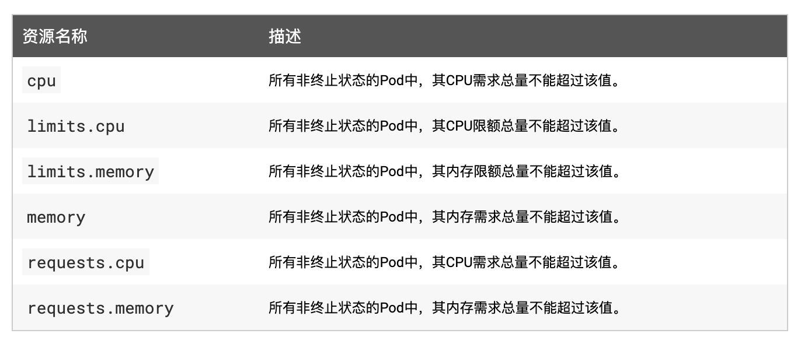
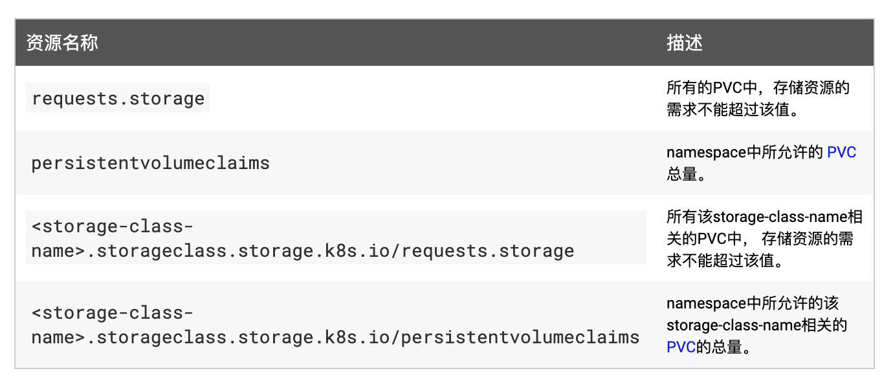
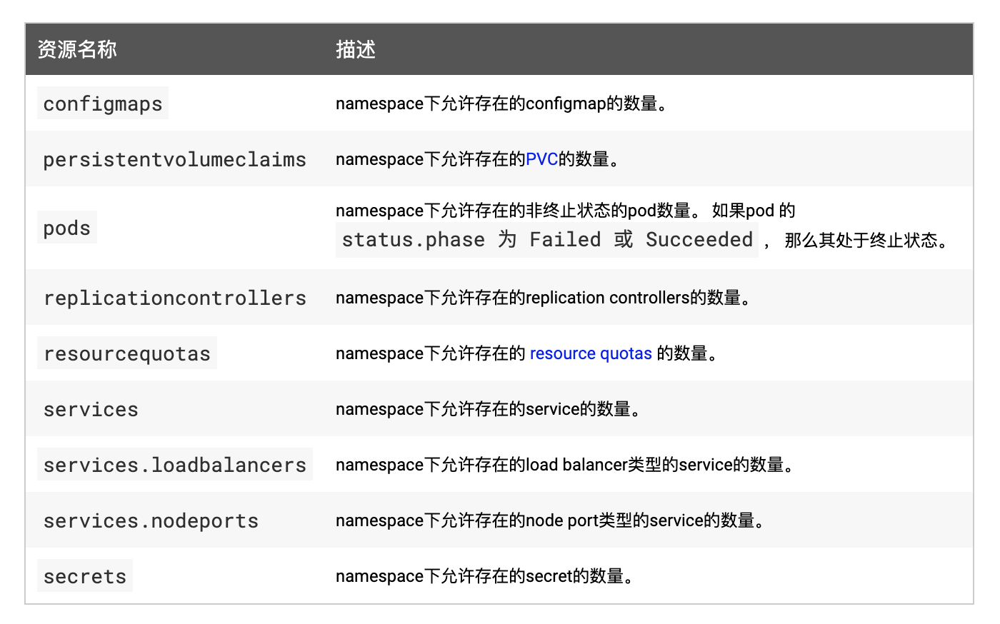

资源配额¶
资源配额用于管理命名空间中对象使用的资源量，我们可以按 CPU 和内存用量或对象数量来设置配额。通过资源配额，可以确保租户不会使用超过其分配份额的集群资源。
资源配额是通过 ResourceQuota 资源对象来定义的，可以对每个 namespace 的资源消耗总量提供限制。它可以按类型限制 namespace 下可以创建的对象的数量，也可以限制可被该项目以资源形式消耗的计算资源的总量。
资源配额的工作方式如下：
- 管理员为每个 namespace 创建一个或多个资源配额对象
- 用户在 namespace 下创建资源 (pods、 services 等)，同时配额系统会跟踪使用情况，来确保其不超过资源配额中定义的硬性资源限额
- 如果资源的创建或更新违反了配额约束，则请求会失败，并返回 HTTP 状态码
403 FORBIDDEN，以及说明违反配额约束的信息 - 如果 namespace 下的计算资源（如 cpu 和 memory）的配额被启用，则用户必须为这些资源设定请求值（request） 和约束值（limit），否则配额系统将拒绝 Pod 的创建。
提示
可使用 LimitRange 准入控制器来为没有设置计算资源需求的Pod设置默认值。
Kubernetes 中主要有3个层级的资源配额控制：
- 容器：可以对 CPU 和 Memory 进行限制
- POD：可以对一个 Pod 内所有容器的的资源进行限制
- Namespace：为一个命名空间下的资源进行限制
其中容器层次主要利用容器本身的支持，比如 Docker 对 CPU、内存等的支持；Pod 方面可以限制系统内创建 Pod 的资源范围，比如最大或者最小的 CPU、memory 需求；Namespace 层次就是对用户级别的资源限额了，包括 CPU、内存，还可以限定 Pod、RC、Service 的数量。
要使用资源配额的话需要确保 apiserver的 --enable-admission-plugins= 参数中包含 ResourceQuota，当 namespace 中存在一个 ResourceQuota 对象时，该 namespace 即开始实施资源配额的管理工作了，另外需要注意的是一个 namespace 中最多只应存在一个 ResourceQuota 对象。
资源配额控制器支持的配额控制资源主要包括：计算资源配额、存储资源配额、对象数量资源配额以及配额作用域，下面我们来分别看看这些资源的具体信息：
计算资源配额¶
用户可以对给定 namespace 下的计算资源总量进行限制，支持的资源类型如下所示：

比如我们现在来为一个命名空间创建内存和 CPU 配额，首先创建一个测试用的命名空间：
$ kubectl create namespace quota-mem-cpu-example然后定义一个如下所示的资源配额资源对象：（quota-mem-cpu.yaml）
apiVersion: v1
kind: ResourceQuota
metadata:
name: mem-cpu-demo
namespace: quota-mem-cpu-example
spec:
hard:
requests.cpu: "1"
requests.memory: 1Gi
limits.cpu: "2"
limits.memory: 2Gi直接创建这个资源对象：
$ kubectl apply -f quota-mem-cpu.yaml
resourcequota/mem-cpu-demo created然后我们查看下上面我们创建的 ResourceQuota 对象：
$ kubectl describe quota mem-cpu-demo -n quota-mem-cpu-example
Name: mem-cpu-demo
Namespace: quota-mem-cpu-example
Resource Used Hard
-------- ---- ----
limits.cpu 0 2
limits.memory 0 2Gi
requests.cpu 0 1
requests.memory 0 1Gi比如现在我们来创建一个如下所示的 Pod：
apiVersion: v1
kind: Pod
metadata:
name: quota-mem-cpu-demo
namespace: quota-mem-cpu-example
spec:
containers:
- name: quota-mem-cpu-demo-ctr
image: nginx
resources:
limits:
memory: "800Mi"
cpu: "800m"
requests:
memory: "600Mi"
cpu: "400m"直接创建这个 Pod：
$ kubectl apply -f quota-mem-cpu-pod.yaml
$ kubectl get pods -n quota-mem-cpu-example
NAME READY STATUS RESTARTS AGE
quota-mem-cpu-demo 1/1 Running 0 32s可以看到这个 Pod 已经正常运行起来了，这个时候我们再看一次上面我们定义的资源配额对象：
$ kubectl describe quota mem-cpu-demo -n quota-mem-cpu-example
Name: mem-cpu-demo
Namespace: quota-mem-cpu-example
Resource Used Hard
-------- ---- ----
limits.cpu 800m 2
limits.memory 800Mi 2Gi
requests.cpu 400m 1
requests.memory 600Mi 1Gi我们可以看到已经明确告诉我们已经使用了多少计算资源了，比如内存的请求值只剩 400Mi（1Gi-600Mi）资源了，我们现在来创建一个大于 400Mi 请求内存的资源测试下：(quota-mem-cpu-pod-2.yaml)
apiVersion: v1
kind: Pod
metadata:
name: quota-mem-cpu-demo-2
namespace: quota-mem-cpu-example
spec:
containers:
- name: quota-mem-cpu-demo-2-ctr
image: redis
resources:
limits:
memory: "1Gi"
cpu: "800m"
requests:
memory: "700Mi"
cpu: "400m"这个时候我们来创建这个资源对象：
$ kubectl apply -f quota-mem-cpu-pod-2.yaml
Error from server (Forbidden): error when creating "quota-mem-cpu-pod-2.yaml": pods "quota-mem-cpu-demo-2" is forbidden: exceeded quota: mem-cpu-demo, requested: requests.memory=700Mi, used: requests.memory=600Mi, limited: requests.memory=1Gi可以看到已经被拒绝了，因为 requests.memory 已经超过了我们的资源配额的限制了。
从上面的练习来看我们可以使用 ResourceQuota 来限制命名空间中运行的所有容器的 CPU 和 内存的资源配额总数，如果限制单个容器而不是所有容器的总数，就需要使用 LimitRange 资源对象了。另外如果在一个命名空间下面计算资源（如 CPU 和内存）的配额被启用了，则用户必须为这些资源设置请求值（request）和约束值（limit），否则配额系统将拒绝 Pod 的创建，除非我们配置了 LimitRange 资源对象。
要使用 LimitRange 同样需要在 --enable-admission-plugins= 参数中开启 LimitRanger。比如现在我们来配置一个命名空间中容器的最小和最大的内存限制，我们创建一个命名空间来进行配置：
$ kubectl create namespace constraints-mem-example然后创建一个 LimitRange 的配置资源文件：(memory-constraints.yaml)
apiVersion: v1
kind: LimitRange
metadata:
name: mem-min-max-demo-lr
namespace: constraints-mem-example
spec:
limits:
- max:
memory: 1Gi
min:
memory: 500Mi
type: Container创建这个资源对象：
$ kubectl apply -f memory-constraints.yaml然后我们可以查看 LimitRange 的详细信息：
$ kubectl get limitrange mem-min-max-demo-lr --namespace=constraints-mem-example --output=yaml
......
limits:
- default:
memory: 1Gi
defaultRequest:
memory: 1Gi
max:
memory: 1Gi
min:
memory: 500Mi
type: Container上面输出显示了最小和最大的内存约束，但是要注意即使我们没有指定默认值，他们也会自动创建的。现在，只要在 constraints-mem-example 命名空间中创建容器，Kubernetes 就会执行下面的步骤：
- 如果 Container 未指定自己的内存请求和限制，将为它指定默认的内存请求和限制
- 验证 Container 的内存请求是否大于或等于 500 MiB
- 验证 Container 的内存限制是否小于或等于1 GiB
下面我们这里来创建一个 Pod，其中容器声明了 600 MiB 的内存请求和 800 MiB 的内存限制，这些满足了 LimitRange 的最小和最大内存约束：(memory-constraints-pod.yaml)
apiVersion: v1
kind: Pod
metadata:
name: constraints-mem-demo
namespace: constraints-mem-example
spec:
containers:
- name: constraints-mem-demo-ctr
image: nginx
resources:
limits:
memory: "800Mi"
requests:
memory: "600Mi"然后直接创建即可：
$ kubectl create -f memory-constraints-pod.yaml
$ kubectl get pods -n constraints-mem-example
NAME READY STATUS RESTARTS AGE
constraints-mem-demo 1/1 Running 0 2m5s我们可以看到是可以正常运行的。
然后我们再创建一个超过最大内存限制的 Pod 测试下：(memory-constraints-pod2.yaml)
apiVersion: v1
kind: Pod
metadata:
name: constraints-mem-demo-2
namespace: constraints-mem-example
spec:
containers:
- name: constraints-mem-demo-2-ctr
image: nginx
resources:
limits:
memory: "1.5Gi"
requests:
memory: "800Mi"现在我们来创建下这个资源对象：
$ kubectl apply -f memory-constraints-pod2.yaml
Error from server (Forbidden): error when creating "memory-constraints-pod2.yaml": pods "constraints-mem-demo-2" is forbidden: maximum memory usage per Container is 1Gi, but limit is 1536Mi输出结果显示 Pod 没有创建成功，因为容器声明的内存限制太大了。我们也可以去尝试下创建一个小于最小内存限制的 Pod 或没有声明内存请求和限制的 Pod。
存储资源配额¶
用户可以对给定 namespace 下的存储资源总量进行限制，此外，还可以根据相关的存储类（Storage Class）来限制存储资源的消耗。

对象数量配额¶
给定类型的对象数量可以被限制。 支持以下类型：

Qos 服务质量¶
https://kubernetes.io/docs/tasks/configure-pod-container/quality-service-pod/